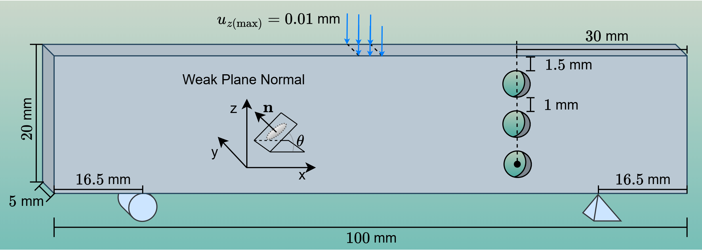

Asymmetric Three-Point Bending Fatigue Test
The test uses a \(100\,\text{mm}\times5\,\text{mm}\times20\,\text{mm}\) block. Three through-holes run along the \(y\)-axis on the face that perpendicular to y-axis. On the bottom, two support points are set: a hinge at one end and a roller at the other. A vertical displacement of \(u_{z,\mathrm{max}}=0.01\,\text{mm}\) is applied at the midpoint of the top surface. To introduce directional weakness, a plane inclined by angle \(\theta\) is defined in the xz plane.
- Demonstrate 3D fatigue capability.
- Show how the anisotropy-director object handles a tilted weak plane.
Material parameters and boundary conditions

| Parameters | Values |
|---|---|
| Young's Modulus \(E\) | 210,000 MPa |
| Poisson's Ratio \(\nu\) | 0.3 |
| Critical Energy Release Rate \(G_c\) | 2.7 MPa\(\cdot\)mm |
| Crack Band Width \(l\) | 0.5 mm |
| Crack Geometric Function \(\alpha(d)\) | \(d^2\) |
| Normalization Coefficient \(c_0\) | 2 |
| Critical Fatigue Threshold \(\alpha_{\mathrm{critical}}\) | 62.5 MPa |
| Anisotropic Amplifier \(\beta\) | 30 |
| Anisotropic Normalization | Determinant Norm |
| Mean Load Fatigue Energy Parameters | \((R,n)=(0.5,\,0.5)\) |
| Fatigue Accumulation Mode | ICLA |
| Loading Period | 0.0005 |
| Number of Cycles | 600,000 |
Animation